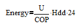

I've read the articles on heat pump monitoring as well as John Cantors pages and I'm still no closer to understanding what I need to measure to build an ASHP monitor capable of calculating the COP of a heat pump. A lot of the equations used to calculate COP just throw out that COP = heat generated / energy used. The energy used is easy - its KW consumed by the heat pump, but there is no explanation of how to measure heat generated. Some other posts suggest that it is something to do with temperature of the inflow - temperature of the outflow, but this is still not clear.
So, can someone please explain to a novice exactly what variables I need to measure to calculate the COP of a heat pump with the correct units and equation to go with it?
Thanks,
Robin
Re: Heat Pump Monitor in laymans terms
If you know the flow rate and the change in temperature you can work out how much energy is required. It takes 1kcal to raise 1L of water by 1C.
So let's say:
Flow rate: 100L/hr
Temp-delta: 10C
That means every hour you're having to heat 100L of water by 10C, which requires 1000 kilo-calories per hour, or 1.162 kWH per hour. A 1.162kW heating element will provide you with 1.162kWH every hour.
Re: Heat Pump Monitor in laymans terms
Hi,
thanks for the response. So what you are saying then is that I need to know not only the temperature, but the flow rate of both the inlet and the outlet?
Re: Heat Pump Monitor in laymans terms
Indeed. That's how most electric showers regulate the water temperature - by varying the flow rate.
Re: Heat Pump Monitor in laymans terms
Being pedantic (sorry) you need two temperatures and one flow rate. Measure the temperature of the inlet, temperature of the outlet and the flow rate from input to output.
Flow meters are available as commercial units with either analogue voltage out or pulses proportional to flow rate.
e.g Grundfoss VFS range
Re: Heat Pump Monitor in laymans terms
Thanks again for the responses. Unfortunately I'm not going to be able to add a flow meter at this stage! I'd almost given up but have just now noticed on the information sticker on the side of the indoor unit says "heating water flow" 1.5m3/hr. So, is the flow rate for a heat pump constant? Or is this value completely irrelevant to the COP calculation?
Re: Heat Pump Monitor in laymans terms
I think trying to measure the COP of a heat pump without a calibrated Heat Meter is likely to lead to inaccuracy. A Heat Meter consists of a flow meter and two temperature sensors as described above, but its calibrated and unfortunately normally rather expensive. Sure you could put something together yourself, but I would only look at the relative change in COP and not take too much notice of the absolute number.
As you have said you are not able to add a flow meter at this stage, so I suggest an alternative method of monitoring your heating energy consumption. The method uses Heating Degree Days (HDD) to evaluate your heating energy use and is a method widely used for all heating systems. Simply HDD's are a measure of how cold it is and it is reasonable to assume heating energy use will be proportional to HDD's. Obviously you can generate the HDD's yourself with an outside temperature sensor.
The method is described in the link, but simply plotting Heating Daily Energy Use vs Heating Degree Days should yield a strong correlation and a regression or trend line should be a good fit to the data. Assuming you are only using the heat pump for heating and have selected the correct base temperature then the gradient of the trend line is going to be a performance coefficient of your house and heat pump.

So once you have the slope of the trend line the following relationship can be used to obtain the heat pump COP. Where U is the total heat loss of the house and U/COP is the gradient of the trend line.